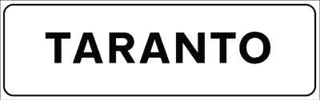
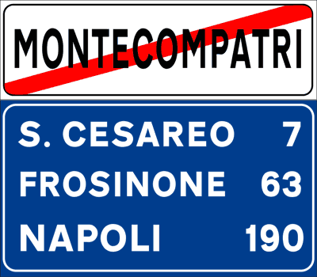
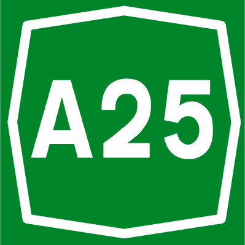
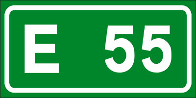
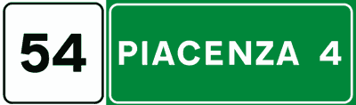
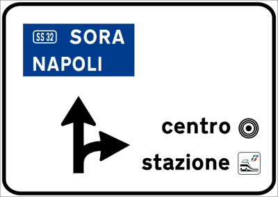
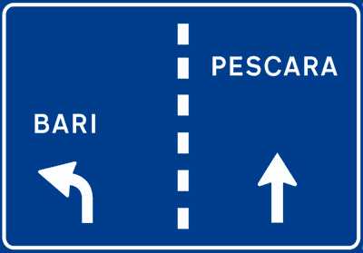
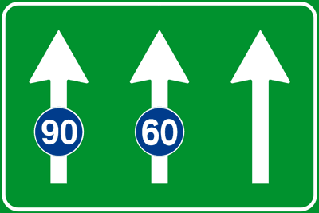
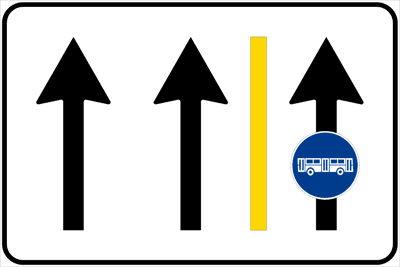
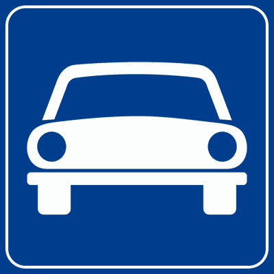

CAPITOLO 08
SEGNALI DI INDICAZIONE
250 - 300 سؤال وزاري
دليل وقاموس الباب الثامن: إشارات الإرشاد والمعلومات
Segnali di Indicazione: Colori, Centri Abitati, Servizi e Corsie
المرجع الشامل والمعتمد لشرح كافة إشارات الإرشاد والمعلومات في قانون المرور الإيطالي: فك شفرة الألوان الستة الحاكمة، قواعد دخول ومغادرة التجمعات السكنية (Centro Abitato)، إشارات اختيار وتوزيع الحارات، دلالات أرقام الطرق، إشارات الخدمات، مواقف السيارات، وساعة الوقوف (Disco Orario).
1. نظرة عامة وإحصائيات الباب الوزارية (Panoramica e Statistiche)
إجمالي الأسئلة في بنك الوزارة
Listato Ufficiale Ministeriale
- يضم بنك الأسئلة المعتمد ما بين 250 إلى 300 سؤالاً يغطي جميع أنواع اللوحات الإرشادية.
- تركز الأسئلة على الآثار القانونية المترتبة على اللوحة (السرعة، أولوية المرور، الحظر، وطبيعة الطريق).
نسبة التكرار والتشابه
Ripetizioni e Trabocchetti (~35%)
- تصل نسبة التكرار إلى نحو 35% حيث تتكرر القواعد الأساسية بصيغ لغوية متباينة لاختبار دقة التركيز.
- الفخ الأبرز يكمن في الخلط بين دلالات الألوان (أخضر، أزرق، أبيض) والخلط بين بداية المدينة ونهايتها.
مستوى اللغة ومنهجية الدراسة
Livello Linguistico A2 - B1
- صُمم هذا الدليل بلغة عربية تقنية واضحة تناسب الدارسين من مستويات A2 في الإيطالية.
- القاعدة الذهبية: الإشارة الإرشادية ترشد وتقدم معلومات، لكنها قد تفرض قيوداً قانونية فورية ومباشرة!
2. مصفوفة دلالات الألوان في الإشارات الإرشادية (Color Codes Matrix)
الألوان في إشارات الإرشاد الإيطالية ليست للزينة، بل هي رموز قانونية تحدد تصنيف الطريق وحد السرعة الواجب احترامه فور رؤيتها:
| اللون وخلفية الإشارة | نوع الطريق / الوجهة (Significato) | حد السرعة العام الافتراضي | ملاحظات وقواعد الامتحان الوزاري |
|---|---|---|---|
| 🟢 أخضر (Verde) | طريق سريع (Autostrada) أو الاتجاه المؤدي إليه | 130 كم/س (110 كم/س عند المطر) | توضع أيضاً داخل المدن لتوجيه السائقين نحو بوابات الأوتوستراد (Casello). |
| 🔵 أزرق (Blu) | طرق خارج المدن (Strade Extraurbane) | 90 كم/س (ثانوي) أو 110 كم/س (رئيسي) | تستخدم لكافة وجهات السفر بين المدن والقرى على شبكة الطرق الإقليمية والقومية. |
| ⚪ أبيض (Bianco) | شوارع داخل المدن (Strade Urbane) ومرافق محلية | 50 كم/س (أو 70 كم/س إذا رُفع بلوحة) | تستخدم لأسماء المدن، الشوارع الحضرية، المراكز الإدارية، المقابر، والمستشفيات. |
| 🟡 أصفر (Giallo) | ورش عمل وأشغال وتحويلات مؤقتة (Cantiere / Deviazione) | حسب ما تحدده لوحة المنع المرافقة | تلغي مؤقتاً الإشارات الدائمة وتسبق مناطق التحويلات وأعمال الصيانة الحية. |
| 🟤 بني (Marrone) | معالم سياحية، تاريخية، ثقافية، وجغرافية (Località turistiche) | حسب الطريق المقام عليه الإشارة | تشير للمنتزهات القومية، المتاحف، الآثار، الفنادق الجبلية، والتخييم. |
| ⚫ أسود / رمادي | مناطق صناعية وحرفية وتجارية (Zone industriali / commerciali) | حسب اللوائح المحلية | تحدد مناطق المعارض، الموانئ، المستودعات، والمجمعات الحرفية. |
3. محاكي بداية ونهاية التجمعات السكنية (Inizio e Fine Centro Abitato)

بداية التجمع السكني (المدينة)
Inizio Centro Abitato (Figura 207)
- حد السرعة القانوني: يصبح تلقائياً 50 كم/س لجميع المركبات، إلا إذا وُضعت لوحة ترفعها لـ 70 كم/س في شوارع معينة.
- حظر الكلاكس تماماً (Uso del clacson vietato): يمنع استخدام آلة التنبيه الصوتية منعاً باتاً داخل المدينة، ويُستثنى فقط حالتان: خطر وقوع حادث وشيك، أو نقل مصابين/مرضى في حالة خطرة إلى المستشفى.
- أسبقية الحافلات (Precedenza autobus): يجب على السائقين إعطاء الأسبقية وتسهيل إعادة انطلاق حافلات النقل العام وسيارات النقل المدرسي عند مغادرتها لمواقفها.
- إضاءة المركبة: يجب استخدام أضواء التقاطع (Anabbaglianti) نصف ساعة بعد الغروب حتى نصف ساعة قبل الشروق أو في الأنفاق.

نهاية التجمع السكني والعودة للخارجي
Fine Centro Abitato (Figura 183)
- عودة السرعة العامة: ينتهي حد 50 كم/س وتعود السرعة للحد الخارجي العام 90 كم/س (على الطرق الثانوية) أو 110 كم/س (على الطرق الرئيسية ما لم ينص على غير ذلك).
- انتهاء حظر الكلاكس: يجوز استخدام المنبه الصوتي خارج المدينة عند الضرورة القصوى لتنبيه السائقين أثناء التجاوز نهاراً في المنعطفات الخطرة.
- لوحة التأكيد والمسافات (Pannello distanziometrico): غالباً ما يُلحق بهذه الإشارة أو يتبعها لوحة زرقاء أو خضراء توضح أسماء المدن القادمة والمسافة المتبقية بالكيلومترات (Segnale di conferma).
- فخ الامتحان الوزاري: الإشارة لا تعني انتهاء كافة قواعد المرور، بل تعني انتهاء القواعد الخاصة بالمدن فقط!
4. ترقيم الطرق وإشارات الأوتوستراد (Identificazione Strade e Segnali Autostradali)

ترقيم الأوتوستراد الوطني
Identificazione Autostrada (Figura 200)
- لوحة خضراء مثمنة الشكل بحرف A ورقم الطريق (مثل A1, A4).
- تطبق عليها كافة قواعد الأوتوستراد الصارمة: حد السرعة 130 كم/س وحظر المركبات البطيئة.

شبكة الطرق الأوروبية الدولية
Itinerario Internazionale (Figura 199)
- لوحة خضراء مستطيلة بحرف E تدل على محور دولي أوروبي عابر للحدود.
- قد تتزامن اللوحة E مع لوحة الأوتوستراد A أو طريق قومي SS في المسار المشترك.

المسافة الكيلومترية ومسافة المخرج
Segnale di Progressiva (Figura 206)
- الرقم بالأعلى يوضح الكيلومتر المقطوع من بداية الطريق السريع.
- الرقم بالسهم يوضح المسافة المتبقية لأقرب مخرج أو محطة وقود أو نجدة.
5. إشارات التقاطعات والاختيار المسبق للحارات (Intersezioni e Preselezione)

إشعار مسبق بالتقاطع الحضري والريفي
Preavviso di Intersezione (Figura 166 / 170)
- توضح شكلياً تخطيط التقاطع القادم وتسمي الوجهات المختلفة قبل الوصول إليها بمسافة آمنة.
- دلالة الألوان داخل المخطط: مستطيل أخضر يوجه للأوتوستراد، مستطيل أزرق للمدن الخارجية، وأبيض للمناطق المحلية.
- لوحة الدوار (Rotatoria - شكل 168): ترسم سهماً دائرياً وتبين المخارج والمدن لكل اتجاه.

حارات الاختيار المسبق قبل التقاطع
Corsie di Preselezione (Figura 171 / 172)
- ترشد السائق للتموضع في الحارة المتوافقة مع اتجاه سيره المفضل قبل الوصول للتقاطع.
- القاعدة الإلزامية: بمجرد أن يتحول الخط الأرضي الفاصل بين الحارات من متقطع (Discontinua) إلى متصل (Continua)، يُحظر منعاً باتاً تغيير الحارة ويجب الالتزام بالاتجاه المحدد للحارة!
- الحارة اليمينية للانعطاف يميناً، والوسطى للمضي قدماً، واليسرى للانعطاف يساراً.
6. توزيع الحارات والسرعات والطرق المخصصة (Corsie e Strade Riservate)

السرعات الدنيا الإلزامية للحارات
Velocità Minima Obbligatoria (Figura 243)
- الحارة اليمنى مخصصة لكافة المركبات العادية دون إلزام بحد أدنى للسرعة.
- الحارات الوسطى واليسرى تتضمن دوائر زرقاء بحدود دنيا (مثل 60 و 90 كم/س)؛ يمنع السير فيها لمن لا تستطيع مركبته بلوغ هذه السرعة.

حارة مخصصة للحافلات ومركبات الخدمة
Corsia Riservata Autobus (Figura 245)
- حارة محجوزة حصرياً لوسائل النقل الجماعي (Autobus) وسيارات الأجرة (Taxi).
- يمنع منعاً كلياً سير أو وقوف السيارات الخاصة والموتوسيكلات فيها حتى لو كان التوقف لحظياً!

طريق مخصص للمركبات ذات المحرك
Strada Riservata Veicoli a Motore (Figura 228)
- سيارة بيضاء على خلفية زرقاء: طريق مفتوح فقط للسيارات والدراجات النارية المؤهلة.
- ممنوع الدخول: المشاة، الدراجات الهوائية (Biciclette)، وعربات الجر، والدراجات البخارية الصغيرة (Ciclomotori).
7. إشارات الخدمات ومواقف السيارات وساعة الوقوف (Servizi e Parcheggio)
إشارات الخدمات ومحطات الشحن والطوارئ
Segnali di Servizio Utile
- محطة وقود (Rifornimento - شكل 254): تزود بالبنزين والديزل، وتوضح المسافة المتبقية بالمتر أو الكيلومتر.
- محطة شحن كهربائي (Ricarica veicoli elettrici): مخصصة حصرياً للمركبات الكهربائية أثناء عملية الشحن الفعلي للبطارية فقط.
- مستشفى (Ospedale - شكل 214): توجب على السائقين التزام الهدوء التام وعدم إحداث ضجيج بالمحرك أو المنبه الصوتي.
- قسم الطوارئ والإسعاف (Pronto Soccorso - شكل 210): صليب أحمر مع هلال أو سرير، يدل على وجود خدمة طوارئ طبية على مدار 24 ساعة.
- هاتف طوارئ (Posto SOS - شكل 220): لطلب النجدة والمساعدة الفنية السريعة على الطرق السريعة.
مواقف السيارات (P) وساعة الوقوف (Disco Orario)
Regolamentazione del Parcheggio
- لوحة الموقف (Parcheggio - حرف P): ساحة مخصصة لانتظار السيارات، قد تكون مجانية أو مدفوعة بتعريفة (Parcometro).
- ساعة الوقوف (Disco Orario): عند وجود لوحة قرص الوقت، يلتزم السائق بضبط وإبراز وقت بدء الوقوف بوضوح خلف الزجاج الأمامي للمركبة.
- أيام العمل (Giorni lavorativi): رمز المطرقتين يحدد سريان التوقيت من الاثنين إلى السبت فقط.
- أيام العطلات والأعياد (Giorni festivi): رمز الصليب اللاتيني يحدد سريان اللائحة في أيام الآحاد والعطلات الرسمية.
- هندسة ركن السيارات:
- عمودي على الرصيف: A pettine (على شكل مشط).
- مائل بزاوية: A spina di pesce (على شكل شوكة سمكة).
- موازي للرصيف في طابور: In fila (على خط واحد).
8. قاموس المصطلحات الفنية الـ 10 الحاكمة (Dizionario Tecnico)
| المصطلح الإيطالي (Termine) | الترجمة العربية الدقيقة | الشرح العملي وموضع الفخ في أسئلة الامتحان الوزاري |
|---|---|---|
| Segnali di indicazione | إشارات إرشادية / معلوماتية | ترشد السائق وتحدد الوجهات، وتلزم باحترام القواعد الخاصة بطبيعة كل طريق وألوانه. |
| Preavviso di intersezione | إشعار مسبق بالتقاطع | توضع قبل التقاطع لتوضيح مسارات الوجهات ولا تعفي السائق من احترام إشارات الأسبقية. |
| Centro abitato | تجمع سكني / مدينة | منطقة تبدأ بلوحة بيضاء، وتفرض سرعة 50 كم/س وحظراً للكلاكس وأسبقية لحافلات النقل. |
| Fine centro abitato | نهاية التجمع السكني | لوحة مشطوبة بالأحمر، تعيد حد السرعة إلى 90 كم/س للطرق الخارجية وتنهي حظر الكلاكس. |
| Deviazione | تحويل مسار السير | تكون بخلفية صفراء وتفرض خط سير بديل بسبب وجود ورش عمل أو عوائق في الطريق الأصلي. |
| Cantiere stradale | ورشة أشغال طرق | ترتبط بالإشارات الصفراء، ويجب عندها توخي الحذر ومراعاة العمال والآليات المتحركة. |
| Località turistica | موقع سياحي أو تاريخي | لوحة خلفيتها بنية دائماً، وفخ الامتحان يدعي أنها ترمز للمناطق الصناعية (Falso). |
| Disco orario | ساعة الوقوف / قرص الوقت | أداة إلزامية لتحديد وقت الوصول في المواقف محددة المدة تفادياً لغرامات التجاوز الزمني. |
| Pronto Soccorso | قسم الطوارئ الطبية | لوحة بخلفية بيضاء وصليب أحمر، وتدل على مستشفى مجهز لاستقبال الحالات الحرجة 24/7. |
| Ricarica veicoli elettrici | شحن المركبات الكهربائية | موقف خاص مخصص حصرياً للمركبات أثناء عملية الشحن الكهربائي الفعلي فقط. |
9. فخاخ الامتحان الوزارية الـ 7 المعتمدة (Trappole dei Quiz)
اختبر فهمك الفوري لأخطر الأسئلة الوزارية التي تتكرر باستمرار في اختبارات Patente B الرسمية:
1. Il segnale di fine centro abitato impone il limite massimo di velocità di 50 km/h.
1. تشير لوحة نهاية التجمع السكني (Fine centro abitato) إلى فرض حد أقصى للسرعة يبلغ 50 كم/ساعة.
الإجابة: FALSO ❌
التعليل القانوني: العكس هو الصحيح تماماً! إشارة نهاية المدينة تعني انتهاء حد 50 كم/س الخاص بالمدن، والعودة إلى الحد العام للطرق الخارجية خارج المدن وهو 90 كم/س.
التعليل القانوني: العكس هو الصحيح تماماً! إشارة نهاية المدينة تعني انتهاء حد 50 كم/س الخاص بالمدن، والعودة إلى الحد العام للطرق الخارجية خارج المدن وهو 90 كم/س.
2. Nei centri abitati è sempre consentito l'uso del clacson per avvisare gli altri veicoli prima di un sorpasso.
2. داخل التجمعات السكنية، يُسمح دائماً باستخدام آلة التنبيه (الكلاكس) لتحذير المركبات الأخرى قبل مناورة التجاوز.
الإجابة: FALSO ❌
التعليل القانوني: استخدام المنبه الصوتي داخل المدن محظور بشكل عام (Vietato di norma) ولا يجوز للتجاوز؛ ويُسمح به فقط في الطوارئ القصوى ونقل المصابين والمرضى الخطرين.
التعليل القانوني: استخدام المنبه الصوتي داخل المدن محظور بشكل عام (Vietato di norma) ولا يجوز للتجاوز؛ ويُسمح به فقط في الطوارئ القصوى ونقل المصابين والمرضى الخطرين.
3. Il segnale verde di indicazione autostradale può trovarsi anche su strade urbane per indicare la direzione verso l'autostrada.
3. إشارة الإرشاد الخضراء الخاصة بالأوتوستراد يمكن أن توجد أيضاً على طرق المدن لتوضيح الاتجاه المؤدي إلى الطريق السريع.
الإجابة: VERO ✅
التعليل القانوني: علامات الإرشاد تتلون بلون الطريق الذي ترشد إليه حتى لو كانت مثبتة على طريق آخر ذي تصنيف مختلف؛ لذا توضع اللوحات الخضراء داخل المدن لترشد السائق إلى مدخل الأوتوستراد.
التعليل القانوني: علامات الإرشاد تتلون بلون الطريق الذي ترشد إليه حتى لو كانت مثبتة على طريق آخر ذي تصنيف مختلف؛ لذا توضع اللوحات الخضراء داخل المدن لترشد السائق إلى مدخل الأوتوستراد.
4. La corsia riservata agli autobus può essere utilizzata da tutti i veicoli per effettuare la sosta rapida.
4. الحارة المخصصة للحافلات (Corsia riservata) يجوز استخدامها من قبل جميع المركبات لإجراء توقف سريع (Sosta rapida).
الإجابة: FALSO ❌
التعليل القانوني: الحارة المخصصة للحافلات محجوزة حصرياً للنقل العام وسيارات الأجرة المرخصة، ويُحظر سير أو وقوف أو توقف المركبات الخاصة بها قطعياً لتفادي تعطيل حركة النقل العام.
التعليل القانوني: الحارة المخصصة للحافلات محجوزة حصرياً للنقل العام وسيارات الأجرة المرخصة، ويُحظر سير أو وقوف أو توقف المركبات الخاصة بها قطعياً لتفادي تعطيل حركة النقل العام.
5. Il segnale di parcheggio con pannello integrativo di disco orario impone di indicare l'ora di arrivo.
5. إشارة موقف السيارات الملحق بها لوحة قرص الوقت (Disco orario) تفرض إظهار ساعة الوصول بوضوح.
الإجابة: VERO ✅
التعليل القانوني: عندما تفرض لوحة الموقف ساعة الوقوف (Disco orario)، يكون السائق ملزماً قانوناً بضبط وقت وصوله وإبراز القرص خلف الزجاج الأمامي ليتمكن المراقب من احتساب المدة المسموحة.
التعليل القانوني: عندما تفرض لوحة الموقف ساعة الوقوف (Disco orario)، يكون السائق ملزماً قانوناً بضبط وقت وصوله وإبراز القرص خلف الزجاج الأمامي ليتمكن المراقب من احتساب المدة المسموحة.
6. Il segnale con sfondo marrone indica località industriali e artigianali.
6. الإشارة ذات الخلفية البنية تشير إلى مناطق صناعية وحرفية.
الإجابة: FALSO ❌
التعليل القانوني: الخلفية البنية (Sfondo marrone) مخصصة فقط للمعالم السياحية والتاريخية والمنتزهات، بينما المناطق الصناعية والحرفية يُستعمل لها اللون الأسود/الرمادي أو الأبيض.
التعليل القانوني: الخلفية البنية (Sfondo marrone) مخصصة فقط للمعالم السياحية والتاريخية والمنتزهات، بينما المناطق الصناعية والحرفية يُستعمل لها اللون الأسود/الرمادي أو الأبيض.
7. Il segnale di strada riservata ai veicoli a motore consente il transito a tutti i tipi di veicoli, inclusi ciclomotori e velocipedi.
7. إشارة طريق مخصص للمركبات ذات المحرك تسمح بمرور جميع المركبات بما في ذلك الدراجات البخارية الصغيرة والدراجات الهوائية.
الإجابة: FALSO ❌
التعليل القانوني: هذه الطريق مخصصة فقط للسيارات والدراجات النارية السريعة؛ ويُحظر فيها سير الدراجات الهوائية (Velocipedi)، والمشاة، والدراجات البخارية الصغيرة (Ciclomotori).
التعليل القانوني: هذه الطريق مخصصة فقط للسيارات والدراجات النارية السريعة؛ ويُحظر فيها سير الدراجات الهوائية (Velocipedi)، والمشاة، والدراجات البخارية الصغيرة (Ciclomotori).